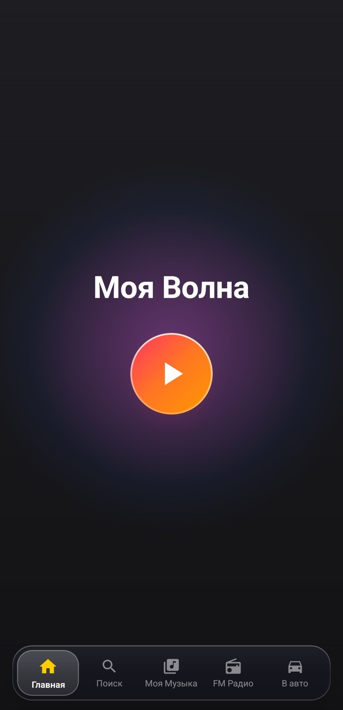
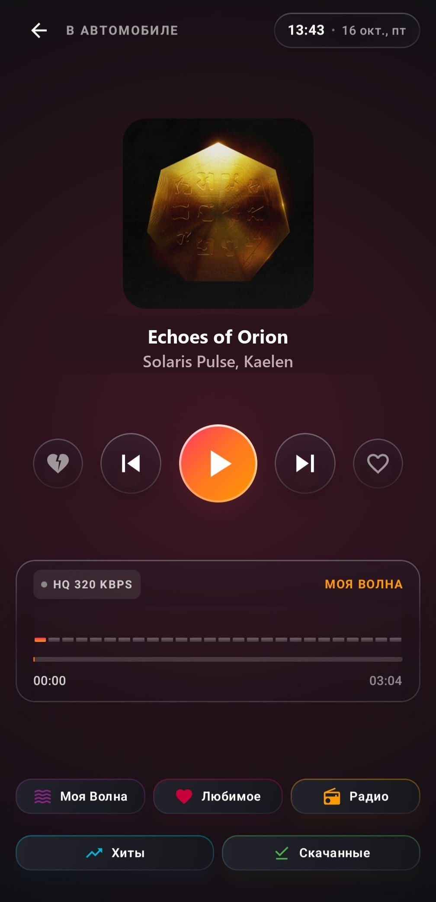

Чистый звук
и ничего лишнего
Быстрый и отзывчивый неофициальный клиент Яндекс Музыки. Мгновенный запуск, интеллектуальная «Моя Волна», 37+ FM-радиостанций и режим для автомобильных магнитол.

Создано для тех, кто ценит скорость и звук
Только любимые треки, персональные рекомендации и стабильное воспроизведение.
Мгновенный запуск и плавная работа
Никаких зависаний, скрытых фоновых процессов и лишней нагрузки на систему. Приложение открывается за доли секунды и работает безупречно плавно даже на бюджетных смартфонах и автомобильных магнитолах.
«Моя Волна» без рекламы
Умный алгоритмический бесконечный поток, который анализирует ваши предпочтения и подбирает треки под настроение и занятие.
37+ FM Радиостанций
Прямой эфир DFM, Record, Relax FM, Европа Плюс и других станций с распознаванием звучащих композиций и автовосстановлением потока.
Умная буферизация
Опережающий кэш исключает заикания и паузы при нестабильном мобильном интернете на скоростных трассах, в тоннелях и метро.
Автообновления
Встроенная проверка новых релизов с GitHub прямо в настройках. Обновляйтесь в один клик без поиска новых APK по интернету.
Музыка за рулём
без отвлечения от дороги
Специально разработанный автомобильный интерфейс для комфортного и безопасного управления на Android-магнитолах Teyes, Kingbeats, Incar и планшетах.
- ✓ Огромные сенсорные кнопки плеера для удобного переключения на ходу
- ✓ Встроенные контрастные часы и индикаторы связи прямо на панели
- ✓ Полная поддержка аппаратных кнопок руля (мультируль через CAN-шину)
- ✓ Мгновенный старт при включении зажигания без зависаний

Установка за 3 простых шага
Никаких сложных настроек и root-прав. Готово к работе за полминуты.
Скачайте файл APK
Загрузите актуальную версию приложения прямо с GitHub по кнопке или отсканировав QR-код камерой телефона.
Разрешите установку
При первом открытии файла подтвердите разрешение на установку из используемого браузера или проводника файлов.
Войдите через Яндекс ID
Авторизуйтесь через официальную форму Яндекс ID — ваши треки, плейлисты и алгоритм «Моей Волны» мгновенно синхронизируются.